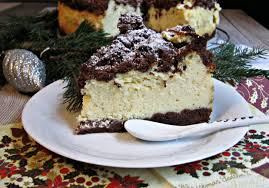
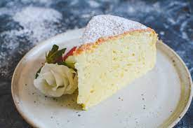
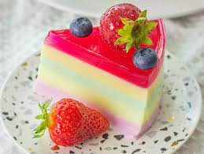
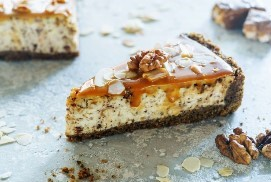

| Rodzaj | Opis | Zdjięcie |
|---|---|---|
| Sernik królewski | Charakteryzuje się czekoladowym spodem, pieczoną masą serową i czekoladową kruszonką na wierzchu ciasta |  |
| Wyśmienity na deser po obiedzie | ||
| Sernik japoński | Charakteryzujący się lekkością i puszystością oraz wysoko wyrośniętym ciastem bez spodu |  |
| Idealny na ciepłe letnie dni | ||
| Sernik na zimno | Składa się ze spodu (z herbatników lub biszkoptu), masy serowej zestalonej żelatyną, żółtkami lub agar-agar oraz warstwy galaretki na wierzchu ciasta |  |
| Idealny na letni deser | ||
| Sernik z orzechami | Wyjątkowy puszysty sernik z dodatkiem orzechów |  |
| Świetny na przyjęcia rodzinne | ||